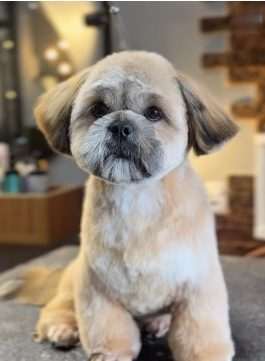
Macho
Rosto redondinho
A tosa ursinho clássica: rosto redondo, proporção equilibrada e acabamento limpo.
alunos dentro da Tosa Bebê Enshitsu
Treinamento prático para groomers e tosadores: da preparação da pelagem ao acabamento do rosto redondo e da pata cilíndrica, com Giovanna Rivaroli, groomer competidora do Master Groom.
Você se reconhece?
Não basta fazer uma boa tosa uma vez. Você precisa saber repetir o resultado.
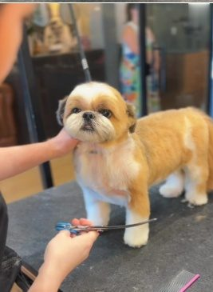
O método
Quando o processo é explicado em etapas claras, a tosa bebê deixa de ser um desafio e vira rotina. O Enshitsu é o passo a passo que a Giovanna usa no dia a dia da GR Groomers, organizado para você acompanhar, executar e levar para a sua equipe.
A lógica de cada etapa, sem termos técnicos desnecessários.
Do início ao fim, com segurança em cada passo.
O mesmo acabamento em todos os cães, em todos os atendimentos.
O método para quem trabalha com você.
Conteúdo
No treinamento
Você acompanha o processo em dois cães, com texturas de pelo diferentes, para entender como o método se adapta sem perder o padrão.

A tosa ursinho clássica: rosto redondo, proporção equilibrada e acabamento limpo.
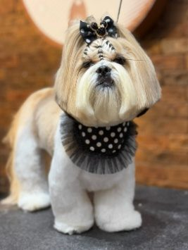
Um rosto mais elegante, com linhas definidas e acabamento sofisticado.
Para quem é
“Quero aprender do zero, sem me perder em termos técnicos.”
O passo a passo começa na preparação da pelagem e segue em etapas curtas, para você acompanhar e executar com segurança.
Você leva: um caminho claro, da primeira etapa ao acabamento.
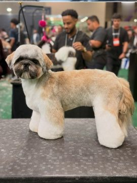
“Já tosa, mas o resultado muda de um atendimento para o outro.”
Você refina rosto e patas e aprende a repetir o mesmo acabamento, cão após cão.
Você leva: segurança técnica e consistência na entrega.
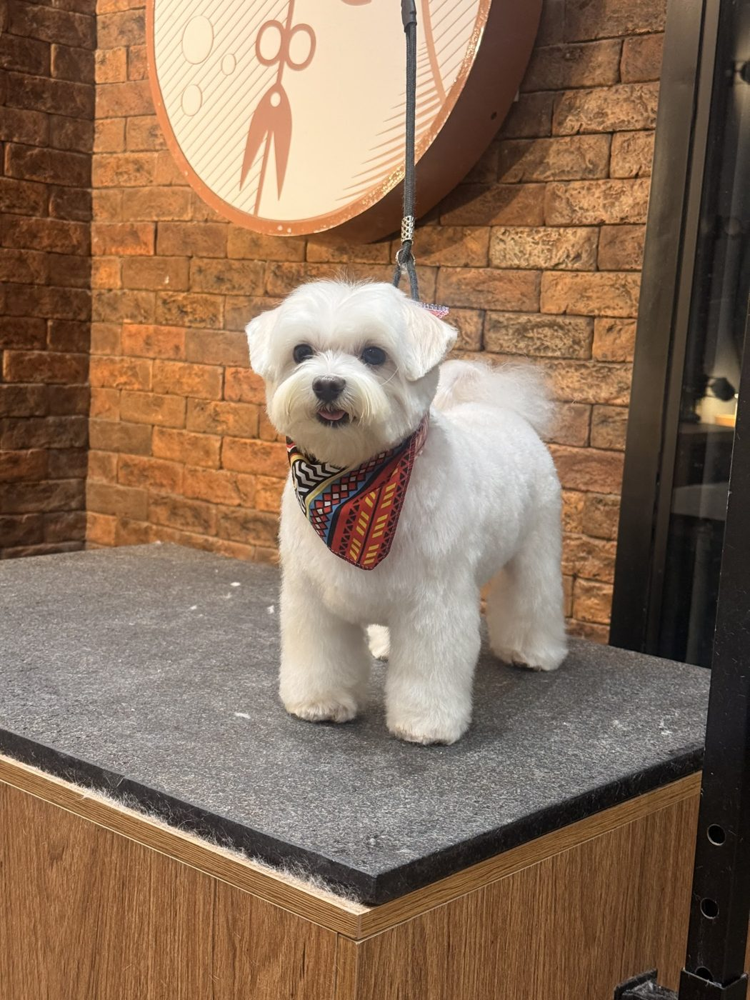
“Minha equipe entrega acabamentos diferentes.”
Um passo a passo que você assiste, aplica e ensina aos colaboradores, para manter o mesmo padrão de qualidade.
Você leva: um método que dá para reproduzir dentro da equipe.
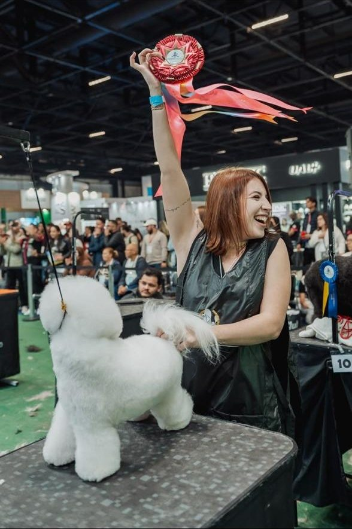
“Quero chegar a um padrão parecido com o dela.”
Você acompanha o processo completo em dois cães, com texturas de pelo diferentes, do jeito que ela trabalha na GR Groomers.
Você leva: o passo a passo por trás do acabamento.
Acesso por 1 ano · Garantia de 7 dias
A diferença
Um treinamento barato pode até mostrar uma tosa. O que muda o seu resultado é:
Você não está pagando por mais vídeo. Está pagando por um processo claro, feito para ser repetido.
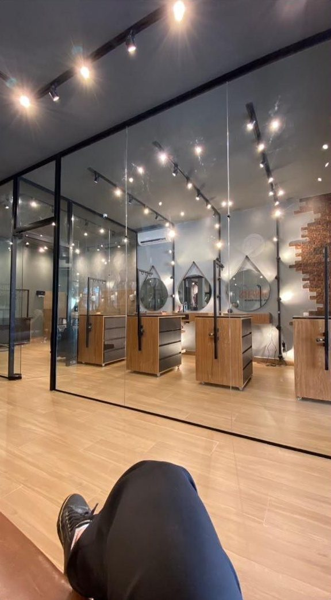
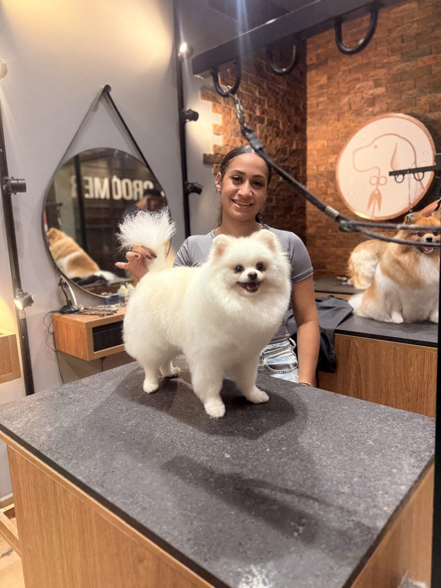
Quem ensina
Giovanna é filha de dois professores. Quando decidiu trabalhar com estética animal, a família não via futuro na profissão. Ela seguiu estudando, fez cursos e especializações e foi buscando formas mais práticas de melhorar a técnica.
Com cerca de 8 anos de mercado, abriu seu próprio espaço, a GR Groomers, em Guarulhos. A equipe cresceu para cerca de 10 colaboradores, e surgiu a pergunta que mudou o seu jeito de trabalhar:
Como fazer profissionais diferentes entregarem o mesmo padrão?
A resposta foi simplificar. Giovanna estruturou um passo a passo que qualquer pessoa da equipe consegue aprender e repetir. É esse processo que ela ensina no Enshitsu.
Resultados
Mensagens de alunas dos cursos da Giovanna.
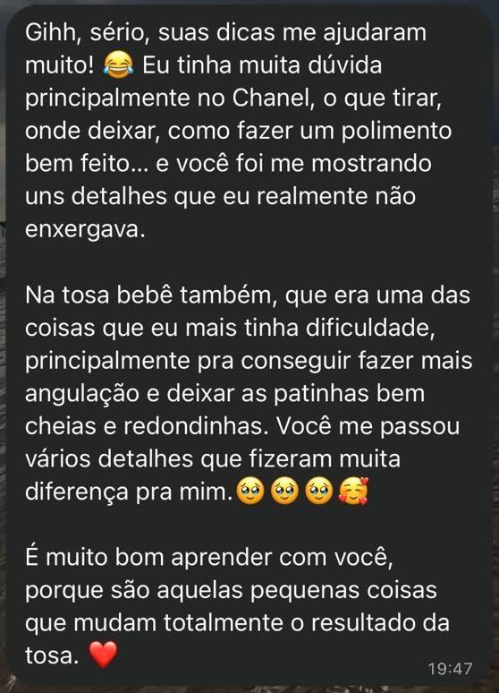
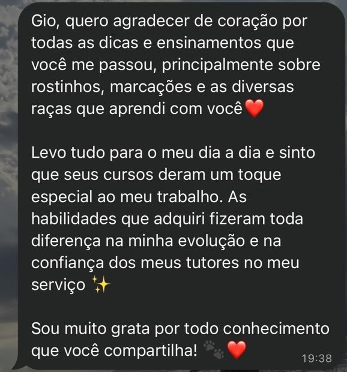
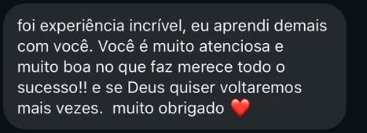
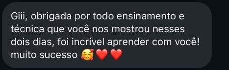
Trabalhos reais da GR Groomers: o padrão se repete.
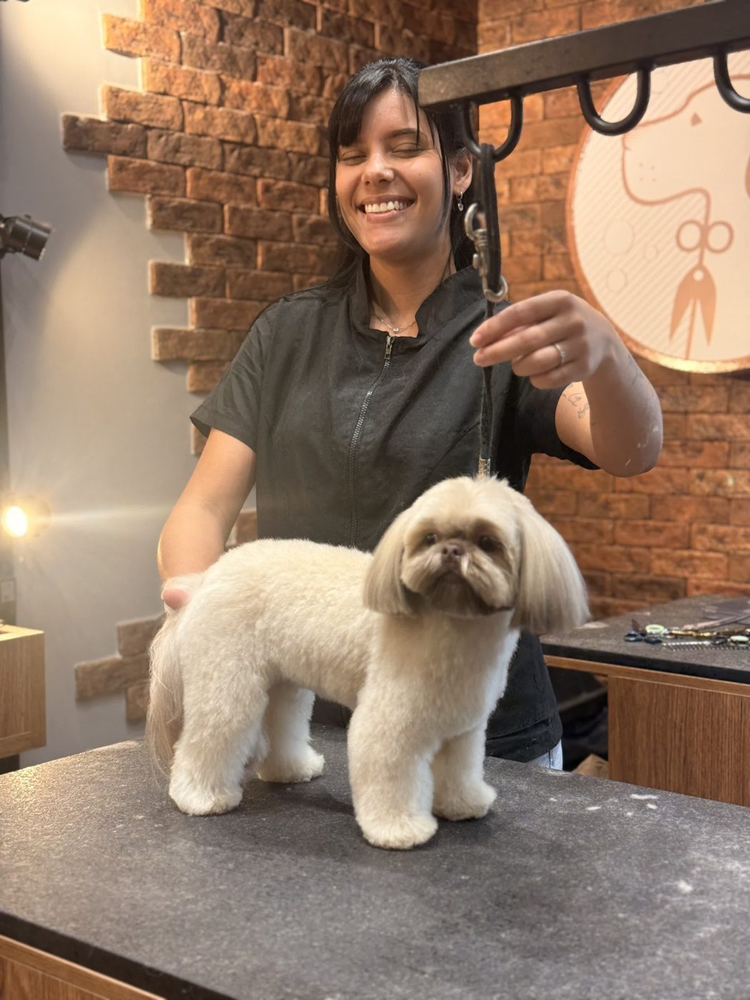
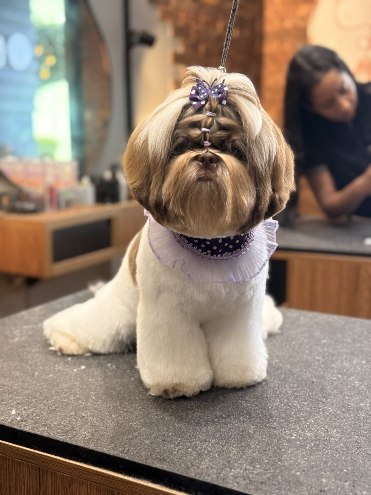
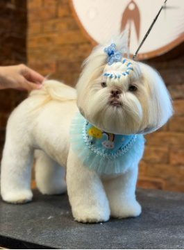
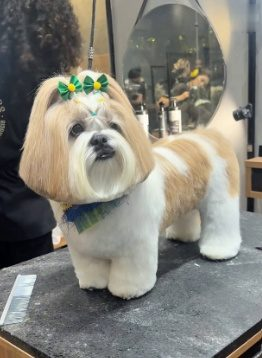
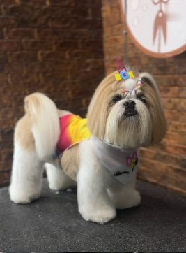
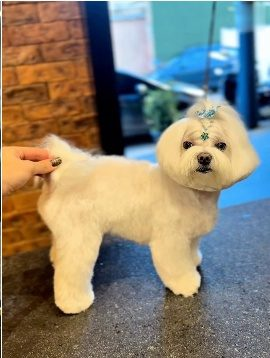
Acesso por 1 ano · Garantia de 7 dias
Tosa Bebê Enshitsu
Veja tudo o que está incluído:
à vista, ou parcelado no cartão
(valor da parcela em breve)
Garantia incondicional de 7 dias. Reembolso total, sem burocracia.
Esta condição encerra em 14:59
Ficou alguma dúvida? Nos chame no WhatsApp
Assim que chegarmos a 100 alunos, vamos sortear um dia presencial com a Giovanna entre quem já está dentro.
Ainda não tem certeza? Não se preocupe!
Você terá 7 dias completos para acessar o treinamento, assistir às aulas e testar o método na prática.
Se, por qualquer motivo, o curso não atender às suas expectativas, basta pedir o reembolso e devolvemos o valor integral, sem burocracia.
Dúvidas
Sim. O passo a passo é feito para ser claro, sem termos técnicos desnecessários.
Sim. Se a sua tosa bebê varia de um atendimento para outro, ou se você quer um método para sua equipe, o Enshitsu foi feito para isso.
Sim. A técnica foi desenvolvida dentro de uma equipe real, justamente para ser ensinada e repetida.
Sim, ao final do treinamento.
Online, na plataforma [plataforma a confirmar]. As aulas são gravadas, então você assiste quando e onde quiser.
Por 1 ano.
Sim. Você assiste pelo celular, tablet ou computador, no seu ritmo.
Você tem 7 dias de garantia incondicional, com reembolso total e sem burocracia.
Aprenda um processo que você possa executar, repetir e levar para a sua equipe.
Quero dominar a tosa bebêAcesso por 1 ano · Garantia de 7 dias